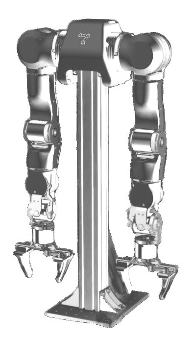
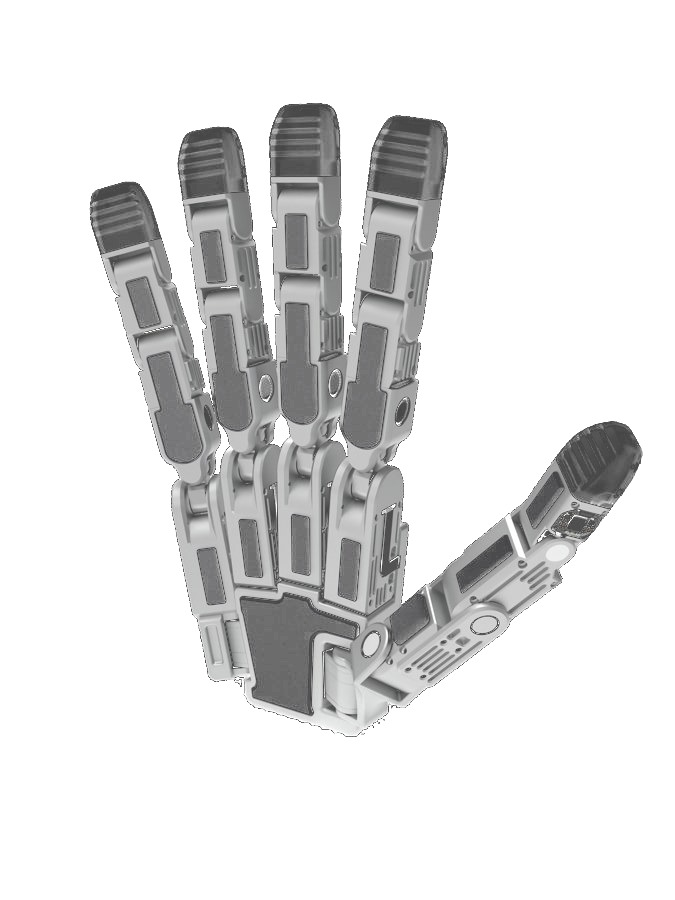
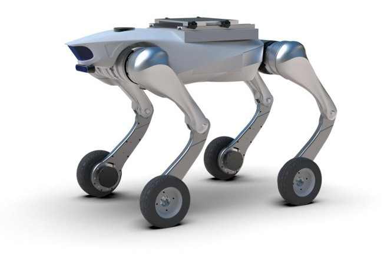
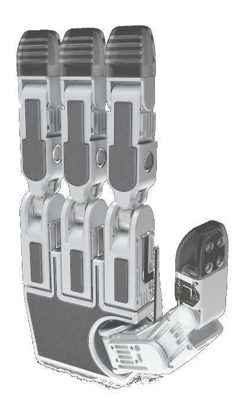
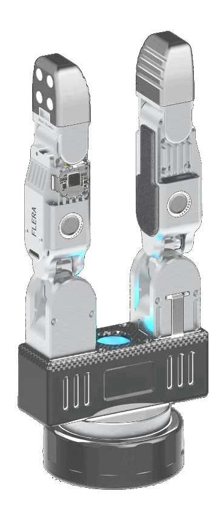
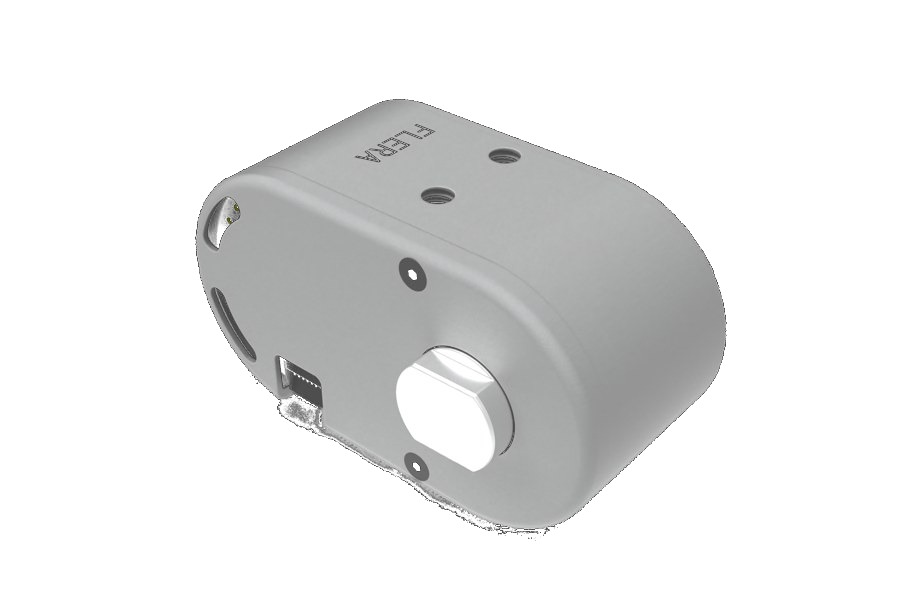
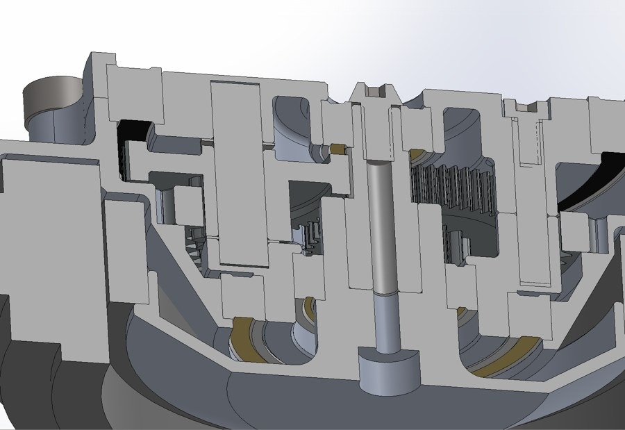
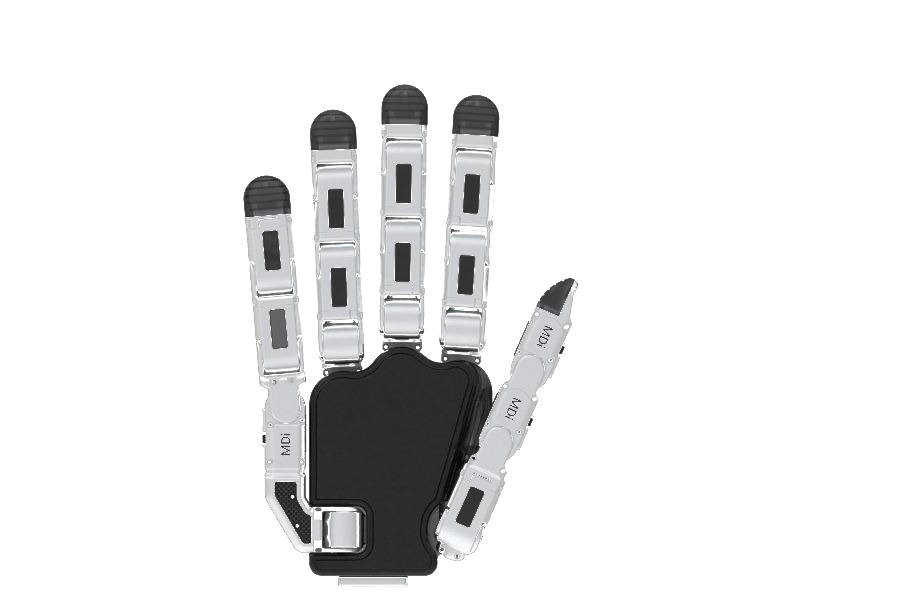
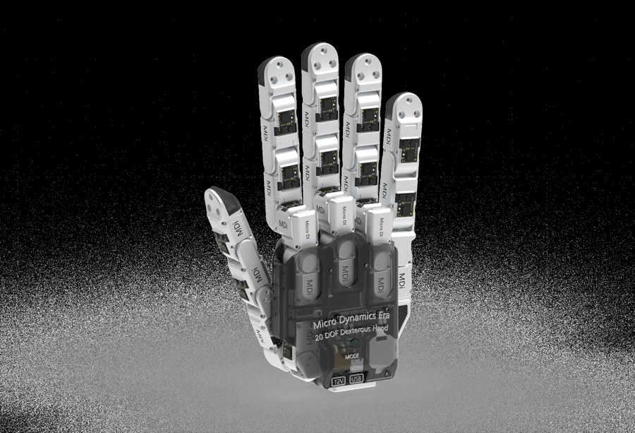

全球高质量具身数据约 50 万小时,年需求超 1,000 万小时(Nomura)—— 缺口 > 99%。
数据单价预计 700 → 350 元/h。先卡位者制定标准、锁定客户;后入者面对半价市场。
自有 CNC 产能,BOM 压至外协约 60%。硬件毛利为正,通缩中仍握有定价权。
第一视角可穿戴采集($25–60/h)。量大便宜,但与真实物理世界存在差距。
真人遥操作真机采集(美国 $90–150/h)。约 25 亿元/年子市场,我们的 RIG 直接切入此层。
失败与纠错过程数据,决定模型鲁棒性。供给几乎空白,定制议价,溢价最高。
NVIDIA GR00T 11 小时生成 78 万条合成轨迹 ≈ 6,500 小时人工;sim-to-real 折损仍需真机数据校准。





微型驱动模组第一代 —— 验证微型化路径,初代灵巧手与小批量末端
¥1,896 vs Maxon ¥6,000+,500 Hz 力控 —— Neo / 三指 / 两指夹爪
驱控一体:扭矩密度 +50%,编码器+驱动器集成,瞄准人形手部与腕关节
直驱柔顺:背驱低减速比、力控透明,面向下一代 RIG 与人形机器人


自有 CNC 产能将 BOM 压至外协约 60% —— 全部平台共享同一成本结构,这是所有定价权的来源。
对标 Sharpa 同级构型
满足精密装配级操作
高带宽力控数据的前提

回本周期 = ¥35 万 BOM ÷(单价 × 日有效小时 × 250 天 × 70% 净收入)。即使单价通缩至 ¥500/h、日产出仅 4 h,回本仍在 12 个月以内。
当前 L2 真机数据成交价 —— 基准 1.0×
采集产能扩张,Nomura 发出通缩预警
累计 -50% —— 纯卖数据模式承压,RaaS 转型必须在此之前完成
FCC 将外国无人机及关键部件纳入 Covered List,开创「生产地 + 品类」管制先例。
境外生产的先进机器人(人形/四足/轮式,>4.4 磅且联网)纳入 Covered List,新型号禁入美国。
判定按生产地 + 美产组件占比;2029 年门槛升至 70%,贴牌转口通道被彻底封死。
已授权旧型号可继续销售,新型号须国防部有条件批准 —— 中国厂商产品迭代权被锁死。
宇树等首当其冲;中国占美国移动机器人部署份额已从 1%(2018)升至 36%(2025,Interact Analysis)。
美国建厂 = 生产地合规,成为稀缺的美本土硬件供应平台,直接承接外溢需求。

整手定价,贴着 Sharpa 价格伞下 1/3
千套订单反推单价(C 级情报)
第二货源定位,对标天机 + WUJI 空位
数据缺口 > 99% 与价格通缩并存,2026–2028 是卡位窗口期。
自有 CNC 产能将 BOM 压至外协 60%,硬件毛利对冲数据通缩。
从卖硬件到 RaaS —— 基准情景 2028 年数据收入 1.05 亿元。